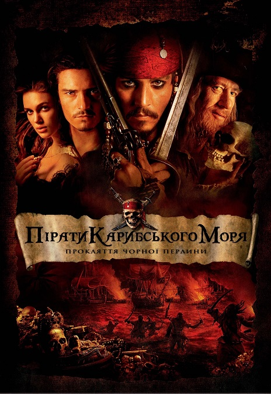

Піра́ти Кари́бського мо́ря: Прокля́ття «Чо́рної перли́ни» (англ. Pirates of the Caribbean: The Curse of the Black Pearl) — американський фантастичний пригодницький фільм 2003 року. Режисер — Гор Вербінскі. Перший із серії фільмів "Пірати Карибського моря".
Фільм вийшов в український прокат 21 серпня 2003 року; для українського прокату тоді не було створено український дубляж і фільм демонструвався з російським дубляжем. Український дубляж цього фільму було створено на студії LeDoyen лише у 2017 році для релізу на home video.
Сюжет
Кінець XVII століття. Корабель із королівського флоту з Порт-Рояля помічає в Карибському морі палаючий корабель. Дівчина на ім'я Елізабет Свонн, донька губернатора, знаходить поряд з кораблем в океані маленького хлопчика Вілла Тернера. Коли його витягнули на борт, Елізабет знаходить на ньому піратський медальйон і забирає його, щоб дорослі не подумали, що він пірат.
З того моменту минуло 10 років. Елізабет досі зберігає медальйон і вирішує надягти його після того, як їй приснився Вілл. Вілл у цей час працює підмайстром у коваля і закоханий в доньку губернатора, але командор Джеймс Норрінгтон вже освідчився Елізабет. Тим часом до Порт-Рояля припливає невдаха-пірат, капітан Джек Горобець, на дірявому човні. Під час зустрічі з вартою він пояснює, що має намір реквізувати корабель і набрати команду з метою повернути свій старий корабель на чорних вітрилах — «Чорну перлину». Перехитривши охорону, йому вдається зійти на борт корабля «Перехоплювач», але в цей час Елізабет, яка гуляла з Норрінгтоном, задихається через тісну сукню, подаровану батьком, і падає зі скель в океан.
Джек Горобець кидається за нею, витягує її на борт і розриває корсет. Піратський медальйон, який перебуває на ній, виявився знайомим Джеку. Але в цей час його знаходить командор і наказує стратити. Завдяки спробам Елізабет за нього заступитися, йому вдається взяти її в заручники, повернути свої речі і втекти. Джек Горобець ховається в кузні, де працює Вілл Тернер. Останній вже давно збирається заколоти якогось пірата і вступає з ним в бій на шаблях. В кінці сутички Горобець дістає пістолет і цілиться в Тернера, але не встигає вистрелити — Джека оглушує вічно п'яний наставник Вілла, містер Браун. В результаті пірата забирають до в'язниці, оголошуючи йому на світанку смертну кару поряд з іншими піратами. Вночі в порт припливає «Чорна перлина» з капітаном піратів Гектором Барбосою, який 10 років тому підняв на цьому кораблі бунт проти Джека Горобця. Тоді Джек був висаджений на безлюдний острів зі шпагою та пістолетом, зарядженим однією кулею.
За легендою, він вибрався звідти на морських черепахах і має намір повернути судно та провчити Барбосу. Пірати, які вже давно заходили в цей порт, нападають на місто. Випадковий постріл з гармати по в'язниці пробиває стіну, чим користуються в'язні (всі, крім Джека, камера якого вціліла). Пірати прибули в порт за медальйоном, тоді як Елізабет думала, що вони хочуть її викрасти. Дівчина, знаючи піратський кодекс, вимагає відвести її до капітана для переговорів. При Барбосі вона представляється як Елізабет Тернер. Пірати, дізнавшись прізвище, полишають порт в обмін на медальйон, однак, забирають її із собою. На ранок Вільям дізнається про викрадення коханої, але командор Джеймс відмовляється плисти за нею. Тоді Вільям звертається до Джека Горобця і звільняє його. Джек здогадується, що він син Білла Тернера, відомого під ім'ям «Ремінець». Разом вони непомітно перебираються на «Перехоплювач» і відпливають на базу піратів — Ісла-де-Муерте.
Дорогою Джек повідомляє, що батько Вілла — пірат, чому той обурюється. На Тортузі Джек зустрічає свого колишнього боцмана — Джошамі Гіббса і повідомляє йому, що з допомогою Вілла вони зможуть повернути корабель і помститися Барбосі. В цей час Барбоса вечеряє в своїй каюті з Елізабет, розповідаючи їй свою історію. Його команда колись знайшла прокляте золото ацтеків, яке було прокляте богами багато років тому. Серед них і медальйон Елізабет — одна із 663 бляшок, вкрадених командою Барбоси зі скриньки.
Після цього вони стають безсмертними привидами, і в місячному світлі Елізабет помічає їх зовнішність, навіть мавпа Барбоси перетворюється на скелет. Щоб повернути собі життя і смерть, вони повинні повернути все золото, вкрадене зі скриньки, і омити його кров'ю кожного проклятого пірата. Не вистачало крові Ремінця Тернера, а оскільки Елізабет використовувала його прізвище, вони взяли її із собою, прийнявши за доньку пірата. Містер Гіббс набрав команду на «Перехоплювач», і її капітаном стає Анна-Марія, в якої Джек раніше взяв без дозволу її бриг.
В дорозі Гіббс розповідає Віллу легенду про заслання Джека на острові. Після порятунку він зберігає виданий йому пістолет з однією кулею для Барбоси. В цей час «Чорна перлина» допливає до встановленого місця — острів Ісла-де-Муерте, і Джек теж. Він просить Вілла не йти напролом і дочекатися слушного моменту, але той пручається. На момент прибуття Джека та Вілла пірати здійснили обряд повернення вкраденого медальйона — облили його кров'ю Елізабет і кинули в скриньку до вже наявних там 662 бляшок.
Через походження Елізабет, яка не є донькою Ремінця, обряд не має сили і не звільняє піратів від прокляття. Зрозумівши це, Барбоса скидає Елізабет з гірки до води. Із води випливає Вілл і забирає Елізабет разом з «закривавленим» медальйоном. Барбоса помічає зникнення дівчини, і його команда вирушає на пошуки. В цей час з'являється Джек, який ще не зовсім прийшов до тями після оглушення, і його беруть в полон. Елізабет вже на «Перехоплювачі» віддає медальйон Віллу. Згідно з законом піратського кодексу — «Не чекати тих, хто відстав» — вони відпливають, але «Перлина», відома як швидкохідний корабель, наздоганяє їх разом з Джеком у полоні.
Відбувається битва. Барбоса забирає медальйон і бере в полон всю команду. Вільям вимагає відпустити всіх, погрожуючи самогубством. Це неприпустимо, так як в цьому випадку прокляття ніколи не буде знято. Але Барбоса замикає команду, а Елізабет і Джека висаджує на острів (з якого Джек вибрався минулого разу), також давши їм один пістолет з однією кулею. На острові Джек зізнається, що минулого разу він вибрався не з допомогою черепах, а з контрабандистами на кораблі. Тут у них був сховок з їжею та ромом, і на вечір Джек з Елізабет добре розважилися. Але вранці Елізабет спалює весь ром та пальмовий ліс на острові з метою привернути увагу королівського флоту. Джек злиться на неї, так як обожнює ром, але згодом помічає корабель «Разючий» із цього флоту. «Разючий» рятує Джека і Елізабет, але Джек знову засуджений до страти.
На прохання Елізабет Джеку пропонують угоду — вказати шлях на Ісла-де-Муерте в обмін на життя. Два кораблі припливають на острів піратів. Джек пропонує командору план: він виманює ворогів в море, а «Разючий» розстрілює їх. Елізабет намагається пояснити, що проклятих неможливо вбити, але люди губернатора не вірять. Джек Горобець прибуває на острів, де кров Вілла вже збираються принести в жертву богам, і попереджає Барбосу про наближення флоту і про те, що прокляття краще зняти пізніше. Команда Барбоси відправляється на «Разючий» битися, а Джек сходиться в двобої з Барбосою. Тим часом Елізабет відпливає з корабля на острів і бореться з людьми Барбоси. Джек, використовуючи одну із бляшок, сам став безсмертним, тим самим рятуючи себе від неминучої загибелі, коли Барбоса встромив йому шаблю у живіт. В ході сутички, він кидає бляшку Віллу, а потім стріляє в Барбосу із заповітного пістолета. Той каже, що Джек витратив кулю даремно, але потім бачить, що Вілл кидає бляшки разом зі своєю кров'ю та кров'ю Джека у скриньку. Барбоса бачить, що його рана кровоточить, і помирає. Вся команда Барбоси на «Разючому» помічає, що втратила безсмертя, і здається владі.
По поверненню до Порт-Рояля Джека Горобця повторно засуджують до повішення. Коли його вже вішають, Вілл кидає йому шпагу під ноги, і Джек рятується. Елізабет теж переходить на бік Горобця і відволікає командора та губернатора, прикинувшись, що втратила свідомість через нестачу повітря. Джек тікає, і вражений командор дає йому день фори. Джек, попрощавшись з молодою парою, пливе до «Перлини». Анна-Марія оголошує Джека її капітаном, і невелика частина команди Барбоси повертається до Джека Горобця.
В сцені після титрів мавпа Барбоси, яка залишилась на острові, підкрадається до скриньки з проклятими золотими монетами ацтеків і краде одну. В промені місячного світла видно, що мавпа знову стає про́клятою і безсмертною.
У головних ролях
Джонні Депп — Капітан Джек Горобець Орландо Блум — Вільям Тернер Кіра Найтлі — Елізабет Свонн Джеффрі Раш — Капітан Гектор Барбоса Кевін МакНеллі — Джошемі ГібсУкраїнський дубляж
Фільм дубльовано українською студією LeDoyen у 2017-ому році на замовлення «Disney Character Voices International».
- Режисер дубляжу — Костянтин Лінартович
- Перекладач — Анна Пащенко.
- Режисер дубляжу — Костянтин Лінартович.
- Звукорежисер — Олена Лапіна.
- Координатор дубляжу — Аліна Гаєвська та Ольга Боєва.
- Виробництво української версії замовлено Disney Character Voices International.
- Джек Спарроу — Олег «Фагот» Михайлюта
- Барбосса — Костянтин Лінартович
- Вілл Тернер — Остап Ступка
- Елізабет Свонн — Інна Бєлікова
- Норрінгтон — Роман Солошенко
- Губернатор Ветербі Свонн — Олександр Завальський
- Пінтель — Володимир Жогло
- Раджетті — Сергій Петько
- Маллрой — Сергій Солопай
- Джошамі Гіббз — Борис Георгієвський
- Муртоґ — Дмитро Бузинський
- та інші.
Нагороди
Фільм було номіновано на нагороду MTV Movie Awards (номінація — Найкращий фільм).
Цікаві факти
Сцена, коли Джек та Вілл йдуть під водою, тримаючи над головою човен, — це відсилка до фільму «Червоний корсар» (1952).
Фільм став першим проектом «Walt Disney Pictures», який отримав вікові обмеження «PG-13».
Спочатку фільм повинен був називатися «Пірати Карибського моря», але у зв'язку з можливим сіквелом продюсери додали «Прокляття Чорної Перлини».
Під час зйомок в одному з павільйонів розпочалась пожежа. Ніхто не постраждав, але збитки було оцінено у 350 тисяч доларів.
Ідея створення фільму виникла під враженням від однойменного атракціону в Діснейленді.
Світова прем'єра фільму відбулася у 2003 році в Діснейленді. Це був перший фільм, показаний там.
Золоті зуби Джека Горобця — це справжні імплантати. Спочатку їх було більше, але продюсер Джеррі Брукхаймер попросив частину скоротити.
Зйомки повинні були проходити у величезному павільйоні з басейном, де знімалися «Титанік» і «Перл-Гарбор», однак він вже був зайнятий знімальною групою «Володаря морів».
Під час зйомок більшість членів знімальної групи страждали від морської хвороби.
Знаменитий піратський символ — череп та дві схрещені кістки на чорному фоні — був придуманий легендарним піратом Джеком Рекхемом. Він також відомий тим, що залучив до своєї команди двох жінок — Мері Рід та Енн Бонні. Персонаж фільму Анна-Марія — своєрідна відсилка до них.
Костюм та грим Джека Горобця були підібрані зокрема й для того, щоб приховати численні татуювання на тілі Джонні Деппа. Після виходу фільму він зробив собі татуювання як у свого героя на честь сина Джека.
При створенні образу Джека Горобця Джонні Депп опирався на образ Кіта Річардса, гітариста легендарного гурту «Rolling Stones».
Від початку 90-х років сценаристи Тед Елліот і Террі Россіо працювали над ідеєю, але спочатку отримали відмови.
В перекладі з іспанської «Isla de Muerta» означає «острів мертвих», а «Tortuga» — черепаху.
Фраза Джека Горобця — «розумієш?» (savvy?), а також остання фраза фільму «Попливемо до горизонту» були придумані Джонні Деппом.
В останній сцені фільму Джонні Депп і Кіра Найтлі носили контактні лінзи.
Коли Вілл приходить до тями після удару пляшкою по голові, на задньому фоні видно дівчинку, яка зіграла юну Елізабет.
Спочатку Алан Сільвестрі повинен був стати композитором фільму, але згодом його замінили на Клауса Бадельта.
В коментарях до фільму Гор Вербінскі та Джонні Депп розкривають імена деяких персонажів: губернатора Свонна звати Вітербі, командора Норрінгтона — Джеймс, а Барбосу — Гектор. — Фраза Джека Горобця про євнуха придумана Джонні Деппом. Джиммі Баффет претендував на одну із ролей у фільмі.
Слова «пірат» і «піратство» вимовляються у фільмі 56 разів.
За словами сценаристів, Вілл Тернер — найкращий фехтувальник з усіх персонажів фільму. Далі йдуть Норрінгтон і Барбоса, а Джек Горобець у цій справі — найгірший.
Згідно з британським телеканалом «Channel 4», фільм займає четверте місце у списку «Найкращих сімейних фільмів».
На зйомках фільму Кіра Найтлі носила перуку, так як її волосся не було достатньо довгим.
Майкл Кітон, Джим Керрі та Крістофер Вокен могли зіграти роль Джека Горобця. Джуд Лоу, Крістіан Бейл, Юен Макгрегор, Крістофер Мастерсон і Тобі Магуайер брали участь в кастингу на роль Вілла Тернера.
За словами Джеффрі Раша, глядач «зчитує» кадр, як книгу: зліва направо. Тому у багатьох сценах актор старався опинятися зліва.
Джонні Депп дав згоду на участь у проекті, коли сценарій ще не був завершений.
Див. також
Примітки
- Шведська база даних фільмів
- Сім фільмів – сім думок (кінокритичний рейтинґ на 18 серпня 2003 року) - Кіноколо, 18.08.2003
- Юрій Зелінський. Пірати бувають різні - День, 22 серпня 2003
- Box Office Mojo — 1999.